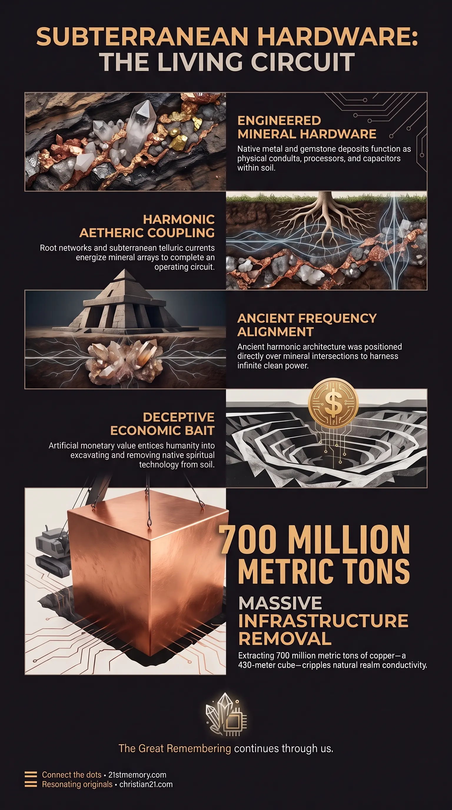

Organic Circuitboard
Organic Circuitboard — Copper, gold, gems, and conductive minerals were grown as the wires, leads, and components of the planetary motherboard.

Organic Circuitboard — Copper, gold, gems, and conductive minerals were grown as the wires, leads, and components of the planetary motherboard.

Mining stripped Earth's planetary motherboard — The monetary value lure draws copper, gold, and gems out of the crust and severs the terrestrial grounding of the circuit.

Single Solid Cube — About 700 million metric tons of extracted copper would melt into a cube 430 metres on each side.
Mineral Components are the intentionally placed, grown physical micro-hardware elements embedded within the Earth's crust that constitute the planetary Organic Circuitboard. Rather than being randomly distributed geological accidents, every deposit of precious metals, gems, crystals, and conductive minerals was engineered and grown millions of years ago by intelligent design. These elements—also referred to as copper, gold, and organic components—function as the physical conduits, wires and cables, data transfer leads, RAM, SSD, CPU, Wi-Fi adaptors, transistors, resistors, and capacitors of a planetary-scale motherboard. When left in situ within the ground, these mineral clusters interface with crystalline cave systems, telluric currents, and the subterranean root network of the Axis Mundi to facilitate harmonic energy transfer and higher-density planetary communication.
The presence of subterranean metals and gemstones is fundamentally spiritual hardware rather than commercial raw material. The planetary design positioned these mineral clusters as integrated micro-component arrays that connect the physical terrain to the higher-density aetheric energy flow. Attached monetary value on gold, silver, and precious stones acts as a deceptive monetary value lure, weaponised by parasitic forces to entice humanity into excavating the planet's internal circuit architecture.
By framing these spiritual components as economic commodities, parasitic controllers trick humans into voluntarily removing the planet's conductive hardware. Stripping these elements out of the ground directly causes a reduction of spirituality, severing the terrestrial grounding of the planetary motherboard and leaving the realm in a state of technological and energetic malfunction. Furthermore, ancient advanced civilisations such as the Tartarians understood this living hardware and deliberately sited their harmonic architecture directly over these mineral traces and nodal intersections to harness infinite clean power and instant portal communication.
The physical plane contains four primary structural variations of Mineral Components, each serving distinct structural and conductive roles within the subterranean motherboard:
Hydrothermal Deposits: These distinct ribbons and sheets of mineralised rock form when superheated, mineral-rich fluids are driven under extreme pressure through subterranean cracks and fissures. Sudden pressure drops or seismic cooling cause dissolved metals—primarily gold and silver—to precipitate out, bonding with quartz to create high-density conductive seams cutting through host rock.
Disseminated Deposits (Invisible Ore): In these widespread formations, microscopic particles of precious metal are uniformly scattered throughout vast, ordinary-looking rock bodies, such as the Carlin-type deposits in Nevada. These microscopic arrays act as dispersed, wide-area conductive matrices across whole geological regions.
Magmatic Reefs (Layered Intrusions): Formed deep underground within cooling bodies of molten magma, heavy minerals settle out into ultra-wide horizontal layers. These reefs house Platinum Group Metals (PGMs)—including platinum, palladium, rhodium, and iridium—exemplified by the massive Bushveld Complex, which extends for hundreds of miles as a predictable layer cake of heavy conductive metal.
Alluvial Deposits: Weathering and water erosion detach dense metallic particles from primary veins, washing gold nuggets, gold flakes, and platinum grains down active and ancient river systems into dense natural traps of gravel, sand, and clay.
Copper serves as a core electrical and data-conduction trace across the planetary framework. Over the last 10,000 years of recorded human history, industrial mining operations have extracted approximately 700 million metric tons of copper from the Earth's crust. If all 700 million metric tons of extracted copper were melted down into a single solid cube, it would measure a mere 430 metres on each side. The removal of this concentrated mass has stripped vital wiring directly out of the Earth, crippling the ground-level circuit board needed for natural planetary electronics and free aetheric power distribution.
Mineral Components do not operate in isolation; they are physically and energetically tied to the overarching organic machinery of the plane:
Axis Mundi Integration: The vast subterranean root system of the central Axis Mundi plunges deep into the crust, growing directly around multi-mineral deposits, crystalline cave systems, and crystalline composite materials.
Ley Line and Aether Coupling: Ley Lines and telluric currents energise these mineral clusters. Aetheric energy gathered by tree branches and leaves flows down into the soil and enters the mineral deposits, completing a continuous closed-loop planetary circuit.
Tartarian Architecture Siting: The Tartarians recognised these organic circuits and positioned their stone masonry and geometric structures precisely over these mineral traces and telluric nodes. This placement allowed Tartarian buildings to function as frequency receivers and self-warming acoustic power stations.
The systematic excavation of Mineral Components represents a deliberate strategy of planetary sabotage by custodial managers. By attaching artificial economic prices to gold, silver, copper, and gems, parasites turned humanity into unwitting agents of their own spiritual containment.
Extracting these components out of the ground to lock them in bank vaults or wear them as ornamental jewelry renders the planetary computer progressively non-functional. Without its native metallic and crystalline components left in situ, the realm cannot process high-density harmonic downloads, sustain instantaneous portal travel, or clear environmental toxicity naturally. Restoring natural harmonic order requires recognizing precious minerals as stationary spiritual hardware rather than extracted commercial assets.
This topic is free to share. Support the archive →